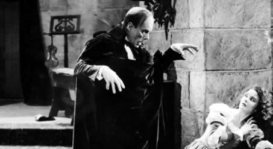
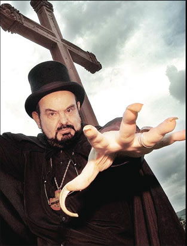
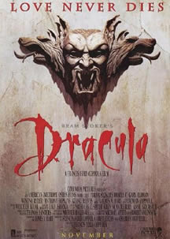

As histórias de terror sempre fizeram
parte do imaginário do ser humano; o prazer em sentir
medo e a arte de infligi-lo obviamente não tardaram
a conseguir seu espaço, a partir do final do século
XIX, naquela que seria a manifestação artística
mais influente nos anos que se seguiram: o cinema. Entre
as quatro paredes da sala escura, assistir a um filme de
terror tornou-se uma atividade totalmente dissociada de
qualquer outro gênero cinematográfico; quem
estava lá sabia bem que sensações encontraria.
E é justamente essa previsibilidade
dos filmes de terror e suspense que os tornam tão
fascinantes; um bom filme do gênero é aquele
que consegue expressar, de maneira convincente, a contraposição
entre o tradicional e a originalidade, ou seja, o velho
susto dado de uma nova maneira. O fascínio causado
por tais obras encontra sua principal explicação
por lidar com questões que culturalmente nos inspiram
alguma apreensão, tais como pesadelos ou o medo da
morte.
Os filmes de terror possuem uma estética
peculiar, em que aspectos técnicos como iluminação
e trilha incidental têm uma maior importância
na composição do suspense, contribuindo para
que o espectador seja induzido à apreensão,
tendo as mais diversas reações, desde um aperto
no braço do acompanhante (para o mais medrosos) até
a ingestão compulsiva de pipocas (para os mais sádicos).
A evolução dos filmes de suspense
e terror está intimamente ligada aos eventos-chave
da história da Sétima Arte; desde os primeiros
filmes mudos, passando pelas novas experiências sonoras
e colorizadas até os psicopatas com machadinhas de
hoje, muito foi produzido para que sempre nos sintamos o
mais desconfortáveis possível. E o irônico
disso tudo é que quanto mais incomodados ficarmos,
melhor será o nosso julgamento sobre aquele filme.
Como tudo começou
O responsável pelos primeiros sustos
na tela grande foi o grande realizador francês George
Melies, com o seu O Castelo do Demônio, de
1896. Outra grande referência na história do
cinema foi O Gabinete do Dr. Caligari, uma das
mais marcantes obras do expressionismo
alemão, dirigido por Robert Wienne em 1919 que, juntamente
com Nosferatu (1922), de W. Murnau, viriam a influenciar
todo o cinema de horror produzido em seguida, graças
à sua atmosfera sobrenatural e fotografia gótica.
Os
estúdios de Hollywood ainda possuíam grande
relutância em produzir filmes do gênero. Um
dos nomes que mais se destacou ao fomentar o investimento
em filmes de terror foi o do ator Lon Channey, que ficou
conhecido como "O homem de mil faces", por interpretar
diversos personagens em inúmeros filmes produzidos
na década de 20, como os clássicos O Corcunda
Notre Dame (1923), onde sua interpretação
magistral de Quasímodo tornou-se um marco do cinema
mudo, e O Fantasma da Ópera (1925), como
o desfigurado compositor/fantasma Erik. Outro grande clássico
da época é a primeira versão de O
Médico e o Monstro, de 1920.
A partir da década de 30, os filmes
de terror passaram a ser produzidos tomando por base histórias
e lendas européias sobre vampiros, cientistas loucos
e aristocratas insanos, tendo como principais figuras os
mitológicos Drácula e Frankenstein,
das clássicas obras de Bram
Stoker e Mary
Shelley, respectivamente.
Os estúdios da Universal tornaram-se
célebres pela produção de dezenas de
filmes com múmias, homens invisíveis e lobisomens.
Dois nomes se destacam neste período: Bela Lugosi
e Boris Karloff. O primeiro pela sua inesquecível
representação do conde mais famoso da literatura
em Drácula e o segundo pela sua não
menos marcante atuação como o gigante grotesco
Frankenstein, ambos em 1931. A produtora, querendo
faturar em cima do sucesso de seus monstrengos, acabou errando
a mão na década seguinte em produções
duvidosas como Frankenstein Encontra o Lobisomem
(1943), A Casa de Frankenstein (1944) e A Casa
de Drácula (1945). Com a 2ª Guerra Mundial
e o verdadeiro horror fazendo parte do dia-a-dia das pessoas,
os filmes de terror acabaram ficando em baixa durante algum
tempo. Outras obras representativas do cinema de horror
dos anos 30 e 40 são o clássico King Kong
e O Homem-Invisível, inspirado na obra de
H.G. Wells, ambos de 1933, A Múmia (1932),
com Boris Karloff no papel-título e a adaptação
do livro homônimo de Oscar
Wilde, O Retrato de Dorian Gray (1945).
Sangue a
Cores
A década de 50 marcou a retomada do
medo no cinema, principalmente devido à contribuição
da produtora britânica Hammer Studios, que voltou
a explorar os antológicos personagens que encheram
os cofres da Universal. Eram filmes baratos que usavam e
abusavam dos – então recentes – recursos
de cor e de muita sensualidade. O principal nome desse período,
sem dúvida, é o de Christopher Lee, cuja interpretação
do conde em Drácula (1958) fez história,
assim como o incansável caçador de vampiros
Dr. Van Helsing, vivido por Peter Cushing. A dupla fez inúmeros
filmes para a Hammer, encarnando também o Dr.
Franskenstein e sua criatura (Cushing e Lee, respectivamente)
em A Maldição de Frankenstein (1957).
Christopher Lee, após algum tempo de ostracismo,
foi recentemente ressuscitado para o papel do vilão
de nome censurado em Star Wars II – O Ataque dos
Clones..
Com a era atômica, os filmes dos anos
50 passaram a ter também uma temática científica/sobrenatural;
criaturas que emergiam de pântanos a partir de experiências
atômicas, bolhas assassinas, tarântulas gigantes
e homens com cabeça de mosca faziam com que os cinemas
deixassem a Disneylândia no chinelo. Os filmes de
terror eram os preferidos dos adolescentes e jovens, uma
fonte inesgotável de (nem sempre boas) idéias
e entretenimento.
E foi nesse cenário que, na virada
dos anos 50/60 surgiu um dos maiores nomes da história
dos filmes de terror, um visionário – ainda
em atividade – cuja plenitude do talento ainda não
foi devidamente esmiuçada: Roger Corman.
Com o seu pequeno clássico A Pequena Loja dos
Horrores (1960), Corman mostrou que era possível
assustar com classe e pouco dinheiro. Este filme ainda revelou
o talento do então desconhecido ator Jack Nicholson,
numa ponta impagável. Além de Nicholson, Roger
Corman fez história como o produtor que deu a primeira
chance a milhares de jovens atores e diretores, entre eles
Robert De Niro, Martin Scorcese, Peter Bogdanovich e Francis
Ford Coppola. Este último, aliás, teve seu
primeiro filme produzido por Corman nessa época,
a história de horror Dementia 13 (1963).
Roger Corman também tornou notórias suas adaptações
de histórias de Edgar
Allan Poe – em sua esmagadora maioria estreladas
pelo mestre do medo Vincent Price –, tais como A
Queda da Casa de Usher (1960) e o maravilhoso O
Corvo (1963).
Os anos 60 e os
novos clássicos
Os anos 60 foram uma época extremamente
fértil para as produções do gênero,
com destaque para as criações do mestre do
suspense Alfred Hitchcock, em clássicos como Psicose
(1960) e Os Pássaros (1963). Outro grande
nome é o do diretor George Romero, que em 1968 produziu
o ultra-cult A Noite dos Mortos-Vivos, que rendeu
várias refilmagens e plágios, inclusive por
parte dele próprio. No mesmo ano, o polonês
Roman Polanski chega ao ápice de seu vigor cinematográfico
com o apavorante O Bebê de Rosemary, depois
de bem-sucedidos trabalhos do gênero, como Repulsa
Ao Sexo (1965) e a comédia A Dança
dos Vampiros (1966), um dos principais representantes
do "terrir".
No
Brasil, tivemos o surgimento do nome que se tornaria um
marco da cinematografia nacional: José Mojica
Marins, mais conhecido pelo nome de seu principal personagem,
Zé do Caixão. Em filmes como À
Meia-Noite Levarei Sua Alma (1964), Esta Noite
Encarnarei No Teu Cadáver (1966) e O Despertar
da Besta (também conhecido como Ritual dos
Sádicos, de 1969), o mestre Mojica apavorou
toda uma geração de expectadores tupiniquins.
Nos anos 70, foi duramente perseguido pela censura e, para
não morrer de fome, realizou diversos filmes de sexo
explícito nos anos 80, até ser finalmente
reconhecido, atingindo o merecido status de "cult".
Conhecido pelo mundo afora (sobretudo nos EUA) como Coffin'
Joe, o nosso brasileiro Zé do Caixão continua
assustando a galera por aqui.
Nos anos 70 começam a despontar alguns
nomes que viriam a se tornar grandes referências nos
filmes de horror; foi em 1972 que Encurralado,
um suspense sobre um caminhão que persegue alucinadamente
um pobre motorista numa estrada dos EUA, revelou para o
mundo a figura de Steven Spielberg, que mais tarde alcançaria
notoriedade com o traumático Tubarão
(1975), que deixou os cinemas lotados e as praias vazias
por muito tempo. Outro filmaço do período
é o independente O Massacre da Serra Elétrica
(1974), dirigido por Tobe Hooper que, juntamente com o também
independente Halloween (1978), de John Carpenter, influenciaram
uma leva de filmes com assassinos misteriosos e impiedosos
que perpetuaram as telas dos anos 80. Com Alien, O Oitavo
Passageiro (1979), Ridley Scott literalmente mandou
os filmes de horror pro espaço.
Na terra da pizza, o diretor italiano Dario
Argento também começava a fazer história,
gastando litros de molho de tomate em suas produções,
como o clássico Suspiria (1977). Argento
se tornaria o principal expoente do "gore", sub-gênero
dos filmes de horror onde o estômago é o limite.
Os filmes de possessão tiveram seu
auge também nos anos 70, em obras como O Exorcista
(1973), A Profecia (1976) e Terror Em Amityville
(1979). O maravilhoso Carrie, A Estranha (1976),
de Brian De Palma, inaugurou a febre de adaptações
de obras do escritor Stephen King, que inspirou também
o cultuado O Iluminado (1980), de Stanley Kubrick,
com um Jack Nicholson (desta vez como protagonista) completamente
ensandecido. Os filmes de espíritos teriam ainda
um grande representante em 1982, com Tobe Hooper (desta
vez sem serras elétricas) dirigindo Poltergeist,
com roteiro e produção de Spielberg. Outra
marcante obra da época foi o restrito (tão
restrito que nem em vídeo foi lançado por
aqui) Eraserhead (1977), um deslumbrante pesadelo
surrealista que viria a lançar o nome de um jovem
e ainda hoje incompreendido diretor chamado David Lynch.
Anos 80:
Machados, Calcinhas e Home Vídeo
A década de 80 marcou a ascensão
dos "slashers" ou "splatters", filmes
geralmente de baixo custo, onde a onda era ter um maníaco
correndo atrás de jovens seminuas. A principal referência
destes filmes – e que acabou se tornando uma grife
de obras do gênero – é o famoso Sexta-Feira
13, com o não menos popular assassino Jason
Vorhees triturando jovens pecadores que davam mole
transando nos arredores de Crystal Lake. Seu comparsa mais
conhecido, o bonitão Freddy Krueger, deu
as caras pela primeira vez em A Hora do Pesadelo
(1984), do sempre irregular Wes Craven.
Alguns grandes nomes do cinema de horror
surgiram nos anos 80, como David Cronenberg, conhecido por
não poupar o expectador em filmes como Filhos
do Medo (1979), Scanners, Sua Mente Pode Destruir
(1981), A Hora da Zona Morta (outra adaptação
de Stephen King, 1983), Videodrome – A Síndrome
do Vídeo (1983), A Mosca (refilmagem
de A Mosca da Cabeça Branca, 1986) e Gêmeos
– Mórbida Semelhança (1988). No
Brasil, o cineasta Ivan Cardoso tornou-se conhecido com
sua estética "terrir-pornochanchada", em
filmes como O Segredo da Múmia (1982) e
As Sete Vampiras (1986).
Em 1982, um filme independente trouxe novas
possibilidades para os filmes de terror: Evil Dead –
A Morte do Demônio (1982) revelou ao mundo o
talento de Sam Raimi, que ainda realizou mais dois filmes
para a série, tendo dirigido recentemente o sucesso
Homem-Aranha. Também merece menção
o nome do escritor Clive Barker, que aventurou-se na direção
e realizou o fantástico Hellraiser – Renascido
do Inferno (1987), um dos grandes filmes de horror
do cinema moderno. Outros filmes legais da década
de 80 (você assistia à Sessão Coruja?)
são Dia dos Namorados Macabro (1981), Feliz
Aniversário Para Mim (1981), Acampamento
Maldito (1983), Gremlins (1984), Re-Animator
(baseado num conto de H.P.
Lovecraft, 1985), Demons – Os Filhos
das Trevas (1985), A Noite das Brincadeiras Mortais
(1986), Os Garotos Perdidos (1987), The Hidden
– O Escondido (1987) e Quando Chega A Escuridão
(1987). Com a recente tecnologia dos aparelhos de videocassete,
a indústria dos filmes de terror (assim como a de
filmes eróticos) entrou numa nova era.
Com
os anos 90, os filmes de terror ficaram mais rarefeitos
e mal-feitos, muitos sendo lançados diretamente em
vídeo. Algumas exceções são
a nova versão de Drácula de Bram Stoker
(1992), realizada por Francis Ford Coppola (apesar de apresentar
um final diferente do livro), o delicioso e escatológico
filme independente Fome Animal (1992), de Peter
Jackson, a convincente adaptação do livro
de Anne
Rice, Entrevista Com O Vampiro (1994),
dirigido por Neil Jordan e a releitura de Frankenstein
de Mary
Shelley (1994), de Kenneth Branagh. O jovem diretor
e quase sempre "outsider" Tim Burton foi um dos
poucos talentos a despontar no período, realizando
pequenas lindas obras com sua inimitável estética
"dark". O diretor Wes Craven, nesta época,
voltou ao cenário com Pânico (1996),
filme que retoma a estética dos filmes mata-mata
dos anos 80, numa espécie de tributo aos jovens retalhados
na década anterior. Infelizmente, o sucesso do filme
iniciou uma série de produções-lixo
com jovens atores americanos da moda, como Eu Sei O
Que Vocês Fizeram No verão Passado (1997),
Lenda Urbana (1998), entre outros.
O único filme que conseguiu quebrar
esse marasmo de idéias – mais por falta de
competidores à altura do que qualquer coisa –
foi o hiperestimado A Bruxa de Blair (1999), que
se valeu de uma divulgação esperta no novo
meio de comunicação de massas da época,
a Internet, para encher o caixa de dinheiro e, de quebra,
gerar uma continuação medonha.
E os filmes de terror do novo milênio,
o que esperar deles? Antes de dirigir Homem-Aranha,
Sam Raimi voltou ao gênero com O Dom da Premonição,
elogiado filme de suspense. No momento, todas as atenções
têm se voltado para Fácil de Enterrar,
filme independente que custou apenas US$6 mil e possui um
único diálogo em seus 81 minutos de duração.
De resto, vale checar na locadora mais próxima alguns
dos títulos acima, apagar as luzes e deixar-se arrepiar!
Além dos filmes de terror propriamente
ditos, o gênero também influenciou cineastas
a realizarem biografias e filmes de ficção,
tendo como enredo o fascínio pelo cinema de horror.
Para quem quiser se aventurar mais no assunto, aqui vão
algumas dicas:
O Homem de Mil
Faces (Man of A Thousand Faces, 1957), de Joseph Peuney
A história de um dos ícone
do cinema de terror, o ator Lon Channey, interpretado pelo
não menos famoso James Cagney. O filme é um
retrato fiel da vida de Channey, que esteve à frente
das maiores produções americanas de terror
na época do cinema mudo, como O Fantasma da Ópera
e O Corcunda de Notre Dame.
Matinee –
Uma Sessão Muito Louca (Matinee, 1993), de Joe Dante
Joe Dante (diretor de Gremlins)
apresenta uma história açucarada passada no
interior de uma cidadezinha americana em meados da década
de 60; apesar disso, o filme retrata bem os filmes de monstros
da época, com aranhas gigantes e invasores do espaço.
Ed Wood (1994),
de Tim Burton
Neste belíssimo filme, Burton biografa
o cultuadíssimo Edward Wood Jr. (interpretado por
Johnny Depp), considerado "o pior diretor do mundo"
e responsável por pérolas do cinema trash
de terror, como o imbatível Plan 9 From Outer
Space. Martin Laudau emociona com sua magistral encarnação
de Bela Lugosi, que terminou sua vida em profunda decadência,
graças a seu vício em morfina.
Pânico
(Scream, 1996), de Wes Craven
Wes Craven (o criador de Freddy Krueger)
voltou ao cenário depois de uma enxurrada de filmes
horrosos (até filme de vampiro com Eddie Murphy ele
fez) com esta obra-tributo aos filmes mata-mata dos anos
80. Um bando de adolescentes fãs de filmes de terror
se vê às voltas com diversos assassinatos reais.
O melhor do filme são as referências aos clássicos
da era "machadinha e calcinha", como Halloween,
Sexta-Feira 13 e A Hora do Pesadelo.
Deuses E Monstros
(Gods And Monsters, 1998), de Bill Condon
Condon retrata com incrível sensibilidade
os últimos dias de vida do aclamado diretor James
Whale, vivido por Ian McKellen, que dá um show de
interpretação. Whale foi o responsável
pelos clássicos do cinema de terror Frankenstein
e A Noiva de Frankenstein, e era assumidamente
gay numa época em que Hollywood não via tais
manifestações com bons olhos. Nem a presença
no elenco do bobão Brendan Fraser consegue estragar
este maravilhoso filme.
A
Sombra do Vampiro (The Shadow Of The Vampire, 2001), de
E. Elias Merhige
Mesclando realidade
e ficção, este filme retrata os bastidores
das filmagens de Nosferatu, de W. Murnau (interpretado
por um transloucado John Malkovich), trazendo à tona
a seguinte questão: e se Max Schreck fosse realmente
um vampiro? Vendo a brilhante composição que
William Dafoe dá o personagem, o expectador não
fica com nenhuma dúvida sobre o assunto.
Por
Joaquin Ghirotti
Extraído
e adaptado de www.mood.com.br